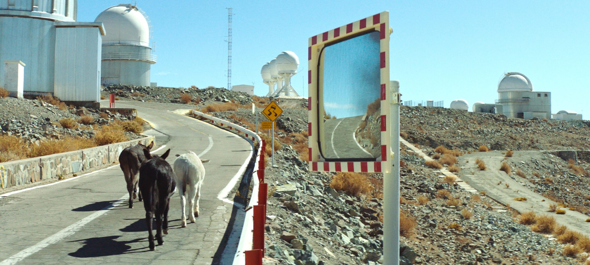
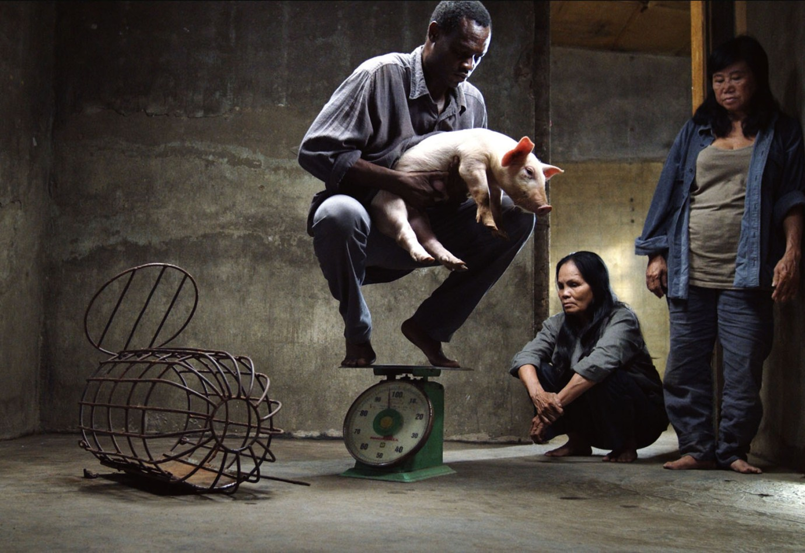

Entre o instinto e o infinito: o estranhamento em Perfectly a Strangeness
Em Perfectly a Strangeness, Alison McAlpine transforma o deserto em campo de tensão entre matéria, percepção e imaginação cósmica.
Textos semanais sobre imagem, processo e construção visual.

Em Perfectly a Strangeness, Alison McAlpine transforma o deserto em campo de tensão entre matéria, percepção e imaginação cósmica.

Em Taste, Lê Bảo organiza a experiência menos pela progressão narrativa do que pela observação dos corpos, do espaço e da repetição.